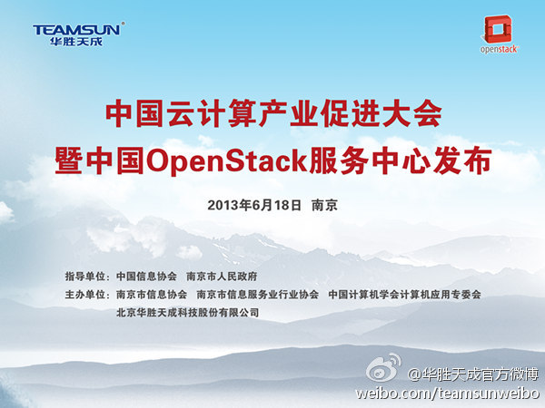

南京的活动，@CSDN-郭铲铲 看看是否能帮着发布下？//@louiszheng1: 除了上午的精彩主题演讲，下午还安排了技术培训，包括Openstack开发和运营，邀请到国内外Openstack实战专家进行演讲；现场更有@中国开源云联盟 成员单位到场，欢迎OS童鞋们前来参加交流@OpenStack @forestzrd @Ada李力
@华胜天成官方微博:
由南京市信息协会、南京市信息服务业行业协会、中国计算机学会计算机应用专委会、华胜天成共同主办的“中国云计算产业促进大会暨中国OpenStack服务中心发布”将于6月18日 9:00-17:00 在南京金陵江滨酒店举办，届时政府领导及众国际IT大鳄将共同见证中国首家OpenStack服务中心的正式发布。期待您的莅临
- 